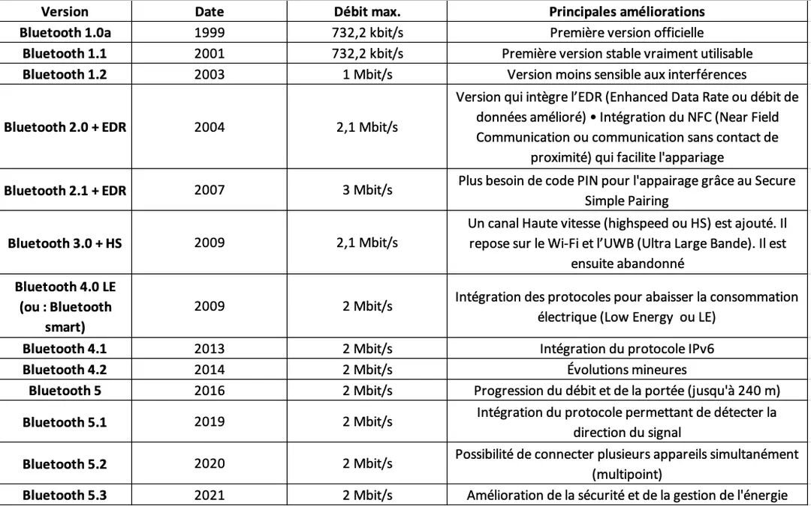

La technologie sans fil Bluetooth est une norme ouverte de communication radiofréquence à courte portée utilisée principalement pour établir des réseaux personnels sans fil (WPAN), et a été intégrée dans de nombreux types d'appareils professionnels et grand public.
Le Bluetooth a de nombreuses utilisations pratiques dans notre vie quotidienne :
Connecter des périphériques sans fil :
souris, clavier, casque audio, haut-parleurs, etc. Permet d'éviter les câbles entre appareils proches.
Transfert de fichiers :
envoyer des photos
documents entre smartphone
Plus rapide qu'en passant par internet.
Géolocalisation et tracing :
les balises Bluetooth permettent le positionnement précis en intérieur
Utile pour le tracing COVID.
Utilisé aussi par Google Maps.
Domotique :
commander à distance des objets connectés type ampoule, thermostat, serrure. Le Bluetooth est intégré dans la majorité des appareils smart home.
Réseaux de capteurs
le Bluetooth Low Energy permet la communication entre petits capteurs avec une consommation minimale d'énergie. Utile pour L'IoT.
Audio sans fil :
écouteurs
casques
enceintes
Soundboard
Voiture connectée :
connexion du smartphone au système multimédia
diagnostic moteur
déverrouillage sans clé
Paiement mobile
L'évolution du Bluetooth

Nous constatons que, d'après ce tableau de l'évolution du bluetooth, le débit reste constant et sa sécurité reste la même.
Différents modes de sécurité disponibles
Mode 1 :
Ce mode est non sécurisé pour toute opération.
Aucune procédure d'initialisation sécurisée, pas d'authentification, ni de chiffrement.
Les appareils qui utilisent ce mode ne peuvent communiquer qu'avec les appareils de ce même mode.
Mode 2
Fournit un niveau de sécurité au niveau application après établissement d'une liaison avec un autre appareil.
Il n'y a aucune procédure sécurisée avant l'établissement d'un canal de communication.
Niveau de sécurité implémenté au niveau du protocole minimal d'échange de donnée L2CAP.
Mode 3
Fournit un niveau de sécurité avant l'établissement du canal de communication.
Chiffrement sécurisé au niveau de la liaison avec un autre équipement Bluetooth : LMP protocol.
Mode mixte
L'objet peut prendre en charge à la fois des données signées et non signées.
Quelles en sont les vulnérabilités ?
Avant de parler vulnérabilité, il est important de comprendre comment le Bluetooth fonctionne. Lors de l'appariement, les appareils doivent s'authentifier mutuellement avant de communiquer via un code PIN. L'appariement est sécurisé via des clés AES 128 bits et une authentification à clé publique. Le Bluetooth utilise le chiffrement de flux (algorithme E0) pour protéger les données échangées contre l'écoute. Norme Bluetooth BR/EDR : option de sécurité renforcée pour les données sensibles.
Ces mécanismes offrent un bon niveau de sécurité basique si correctement implémentés et configurés.
Maintenant que nous avons en tête les bases du fonctionnement de Bluetooth, voici quelques vulnérabilitée importantes :
Bluebugging : L'attaquant prend le contrôle total d'un appareil Bluetooth sans autorisation de l'utilisateur.
Bluesnarfing : L'attaquant accède aux données stockées sur un appareil Bluetooth cible sans permission.
Bluejacking (hameçonnage) : Envoi non sollicité de messages ou de cartes de visite électroniques à des appareils Bluetooth à proximité.
Blurtooth : Vulnérabilité qui permet une connexion non autorisée à un appareil Bluetooth.
DDoS Bluetooth (L2ping) : Inonde un appareil Bluetooth de requêtes de ping pour le perturber.
Blueborne : Série de vulnérabilités permettant à un attaquant de prendre le contrôle d'un appareil sans interaction de l'utilisateur
Le CERTFR a publié un avis de vulnérabilité bluetooth, le 15 décembre 2022, intitulé "Multiples vulnérabilités dans Bluetooth Core Specification". Dans cette publication, nous pouvons trouver deux failles critique dont l'une affecte presque toutes les verisons du bluetooth :
CVE-2022-25837. En bref, un attaquant non authentifié pourrait intercepter les informations de connexion entre deux appareils appairé via Bluetooth en utilisant une méthode de manipulation de l'authentification. Cela peut se produire dans certaines circonstances spécifiques et nécessite des manipulations précises de l'attaquant.
(Publication du CERTFR)
Exemple d'une attaque bluetooth d'iPhone par spam.
Pratiques de sécurité
Pour se prémunir des vulnérabilités, il faut :
Rendre les appareils Bluetooth non-détectables quand la fonction n'est pas utilisée.
Ne pas accepter de pairing de sources inconnues.
Désactiver le Bluetooth quand il n'est pas nécessaire.
Chiffrer les communications sensibles via Bluetooth grâce à la norme Bluetooth BR/EDR.
Mettre à jour firmware et Bluetooth stack des appareils.
Utiliser une longueur minimum de clé PIN (8 chiffres ou plus).
Éviter d'utiliser des PINs prévisibles comme "0000" ou "1234".
Privilégiez des produits de marques reconnues et évitez d'utiliser des appareils dont la sécurité n'a pas été éprouvée.